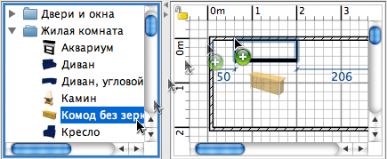

| Добавление дверей, окон и мебели | |||
Чтобы добавить двери, окна или мебель в свой дом, нужно перетащить их из каталога на план дома или в список мебели.  Также, можно выделить несколько позиций в каталоге и выбрать пункт меню Мебель > Добавить к плану или нажать на инструмент Добавить к плану.
При переносе мебели в список мебели или при добавлении при помощи меню Мебель > Добавить к плану
- положение левого верхнего угла мебели находится в точке (0, 0).
Предметы, добавляемые на план, выбираются и отрисовываются одновременно в списке мебели, на плане и в 3D просмотре. Во время загрузки 3D модели, добавляемого предмета, этот предмет отображается в виде белого прямоугольника в 3D виде. |
|